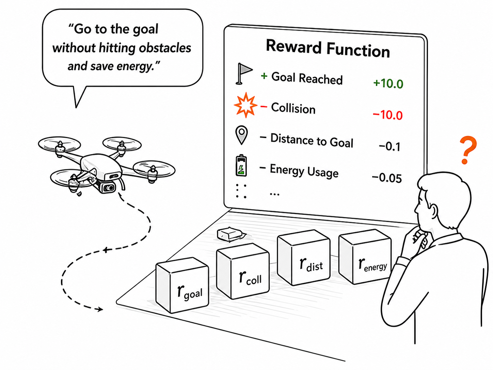
01Human error in reward design
Dense reward functions are easy to write incorrectly and hard to tune across different UAV tasks.
Project page
AgenticRL is a self-refining agentic reinforcement learning framework for vision-conditioned UAV navigation. A multimodal agent diagnoses policy behavior, refines reward functions, and improves learning from simulation to real-world UAV deployment.
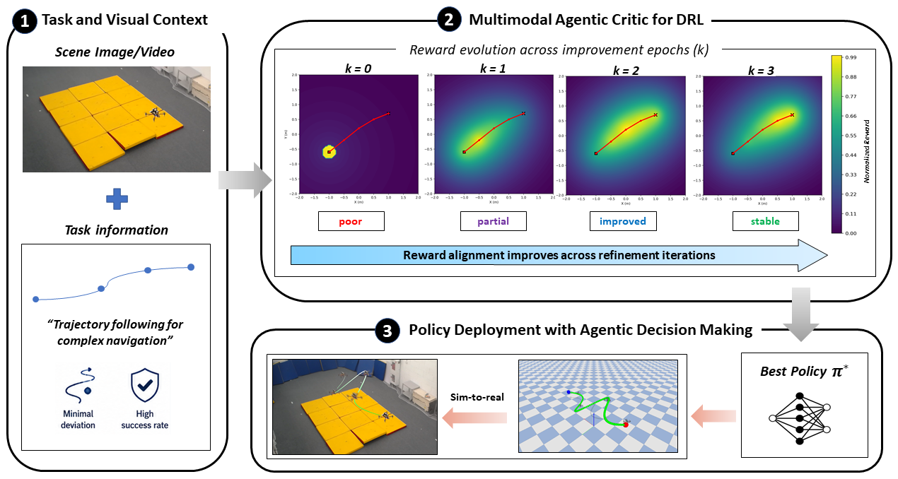
Task context and visual feedback guide reward evolution, policy training, and real-world UAV deployment.
Overview
Reward design is often the hardest part of applying RL to UAVs. AgenticRL replaces repeated manual reward redesign with a closed-loop agentic critic that reads task context, observes failures, and refines the reward.

01Dense reward functions are easy to write incorrectly and hard to tune across different UAV tasks.
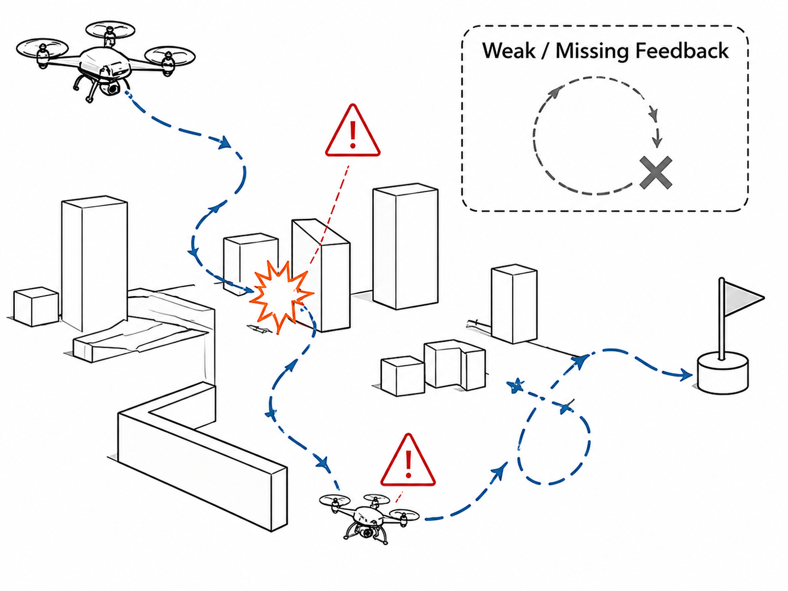
02Without feedback, the policy can exploit shortcuts, collide, oscillate, or optimize the wrong behavior.
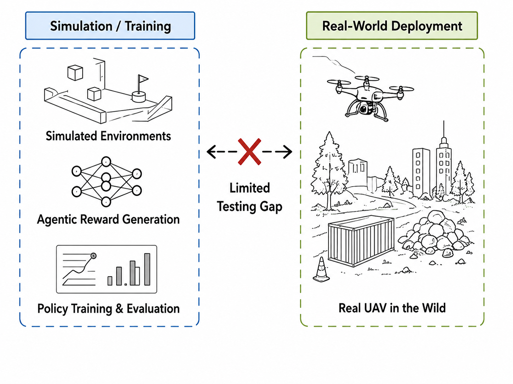
03Agentic reward-refinement loops need validation beyond toy tasks and across real UAV scenarios.
Method
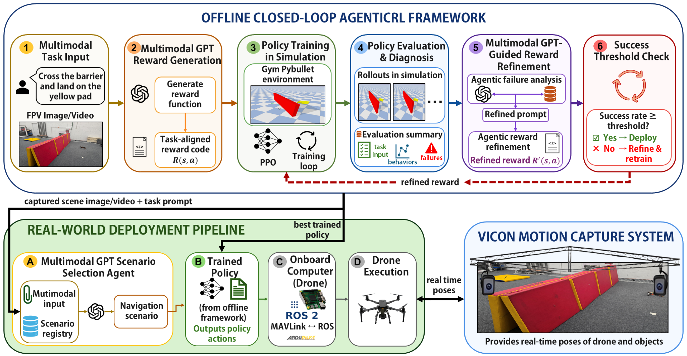
Offline AgenticRL loop: multimodal input → reward generation → policy training → evaluation and diagnosis → reward refinement → deployment.
The system receives task text with an image or video of the scene, allowing the agent to infer objects, goals, and safety constraints.
The multimodal critic produces a task-aligned reward function that is used for RL training in simulation.
The generated reward trains a UAV policy using PPO inside the PyBullet-based simulation environment.
Rollouts, training curves, success rates, and failure cases are summarized and returned to the critic.
The agent revises the reward using failure analysis, improving alignment across refinement epochs.
The best trained policy is retrieved and executed on the UAV through the real-world deployment pipeline.
Scenarios
Each scenario stresses a different aspect of reward design: progress, safety, collision avoidance, landing precision, or motion generation.
Follow a target trajectory while minimizing deviation and maintaining stable UAV motion.
Results
Results are presented as native website tables and charts/figures rather than static table screenshots, so they remain readable and easy to update.
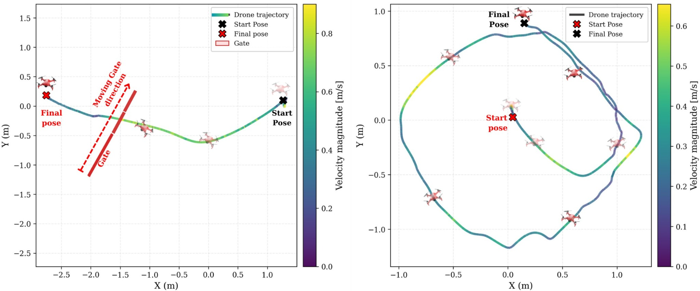
Top-view real-world UAV trajectories for gate traversal and circular motion generation.
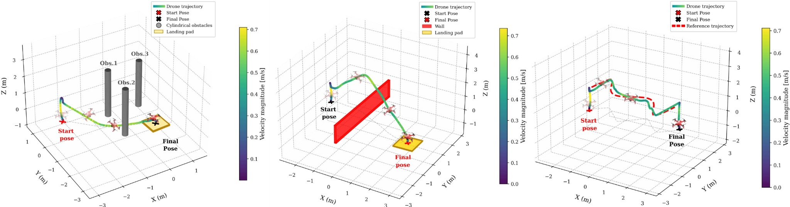
3D UAV trajectories across obstacle avoidance, barrier crossing, and trajectory following tasks.
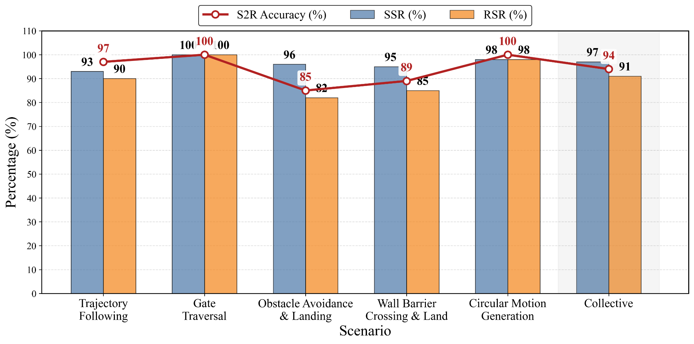
Scenario-wise simulation success rate, real-world success rate, and sim-to-real transfer accuracy.
Tables
Use HTML tables here instead of image tables. These tables are easy to edit, responsive, and match the style of modern academic project pages.
| Scenario | SSR ↑ | RSR ↑ | S2R ↑ | Primary evaluation criterion |
|---|---|---|---|---|
| Trajectory Following | 93% | 90% | 97% | Deviation from reference path and collision-free completion |
| Gate Traversal | 100% | 100% | 100% | Successful traversal through gate center |
| Obstacle Avoidance & Landing | 96% | 82% | 85% | Collision avoidance and landing success |
| Wall Barrier Crossing & Land | 95% | 85% | 89% | Barrier crossing and controlled landing |
| Circular Motion Generation | 98% | 98% | 100% | Stable circular motion completion |
| Collective | 97% | 91% | 94% | Aggregate across all scenarios |
| Literature | Reward Code | Visual Input | Closed-loop Agentic Refinement | Full Task Diagnosis | UAV Implementation |
|---|---|---|---|---|---|
| Code as Policies [1] | ✗ | Partial | ✗ | ✗ | ✗ |
| Code as Reward [2] | ✓ | ✓ | ✗ | Subtasks | ✗ |
| Text2Reward [3] | ✓ | ✗ | ✗ | Limited logs | ✗ |
| Agents Trainer [4] | ✓ | ✗ | ✓ | Error logs only | ✓ |
| AgenticRL | ✓ | ✓ | ✓ | ✓ | ✓ |
This table is implemented as editable HTML, not an image. Replace reference labels [1]–[4] with the exact citations used in the paper.
| Method | Trajectory Follow SR (%) |
Gate Traversal SR (%) |
Obstacle Avoidance & Land SR (%) |
Barrier Crossing & Land SR (%) |
Circular Motion Generation SR (%) |
|---|---|---|---|---|---|
| Zero-shot reward | 0 | 80 | 63 | 0 | 55 |
| Few-shot reward | 48 | 74 | 88 | 72 | 98 |
| w/o analyzer | 50 | 61 | 60 | 52 | 62 |
| w/o vision conditioning | 87 | 95 | 65 | 48 | 76 |
| Full AgenticRL | 95 | 100 | 96 | 93 | 98 |
Scenario-wise success rates for zero-shot and few-shot reward generation, ablated variants, and the full closed-loop framework.
Reward evolution
Reward colormap animations show how the agentic critic reshapes initially weak rewards into task-aligned reward fields across refinement iterations.
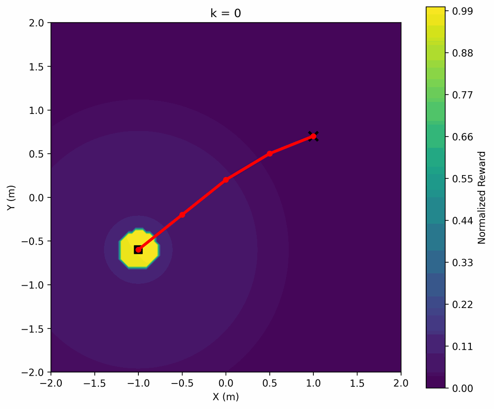
Reward changes from local attraction toward trajectory-aligned progress.
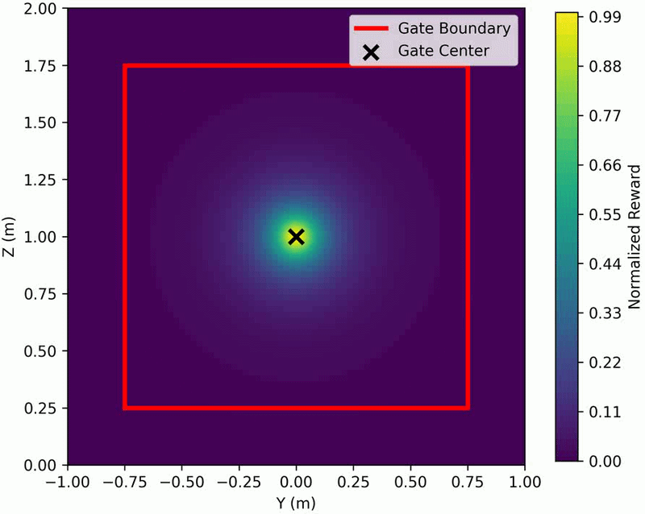
The reward becomes concentrated around the gate center and traversal direction.
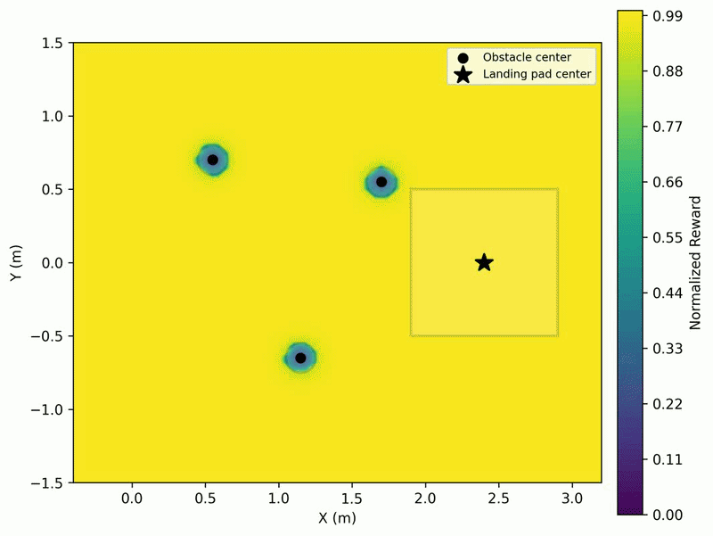
Reward emphasizes safe obstacle clearance and landing-pad alignment.
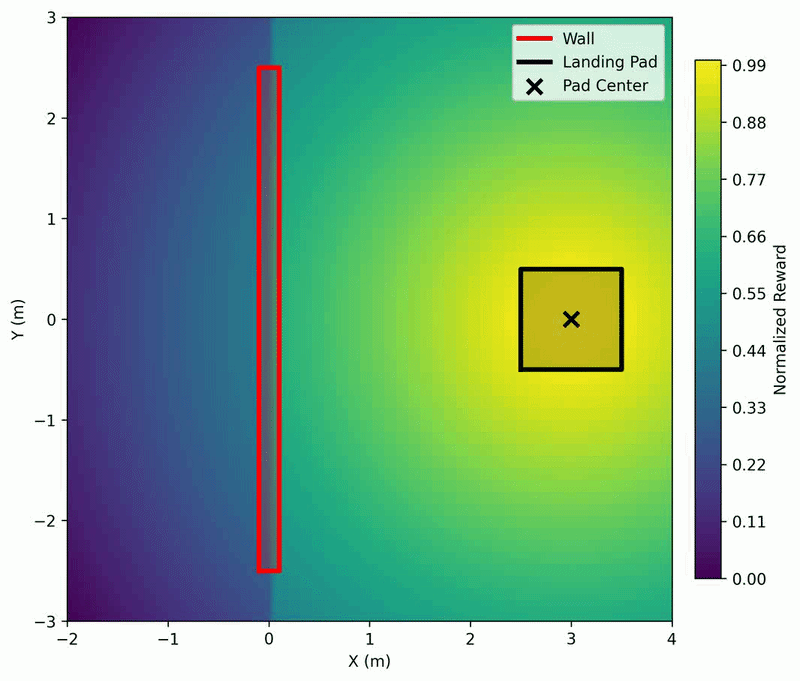
Reward guides barrier crossing before precise landing.
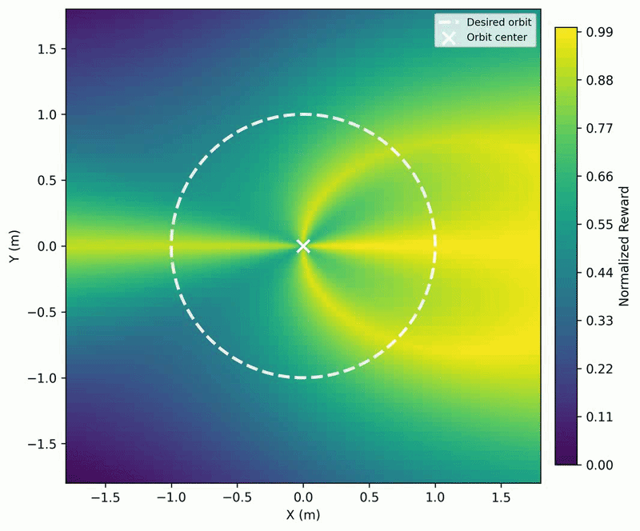
Reward forms an orbit-aware field around the desired circular motion region.
Demos
Put your main demo video and individual scenario clips in the videos/ folder. The page will automatically show them once filenames match.
This embedded demo summarizes the framework, reward refinement, simulation rollouts, and real-world UAV execution.
Open demo videoLinks
Read the paper on arXiv. Code will be released soon.
Citation
@misc{khan2026agenticrlselfrefiningagenticreinforcement,
title={AgenticRL: Self-Refining Agentic Reinforcement Learning for Vision-Conditioned UAV Navigation},
author={Roohan Ahmed Khan and Yasheerah Yaqoot and Amir Atef Habel and Muhammad Ahsan Mustafa and Dzmitry Tsetserukou},
year={2026},
eprint={2606.03963},
archivePrefix={arXiv},
primaryClass={cs.RO},
url={https://arxiv.org/abs/2606.03963},
}